Paris - Chamonix -
Notre Dame - Eric's
Eric was sent to France for a two week business trip in late September. Since France has some of the most famous rock climbing areas in the world, we decided to go over one week early for a vacation.
I had always heard that the French were rude, but we did not find that in our experience. We did arrive exactly one week after the terrorist attack, so the general world attitude toward Americans was softened at that point. We encountered lots of nice people, saw the beautiful countryside, and ate such wonderful food! It was a very nice trip.
We spent a day in Paris, then we took a train to Chamonix. This is
a little ski town in the Alps, very close to Italy and Switzerland. It
is at the foot of Mount Blanc, the highest peak in the Alps. We spent
three days in Chamonix- rock climbing, hiking, and hanging with our new
friends at the Hostel. Then we took the train back and had one day
together back in Paris before I flew home and Eric began work.
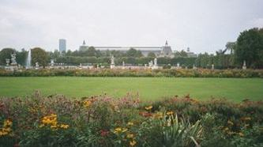
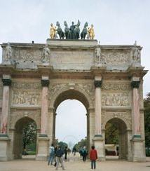
An arch just outside the Louvre.


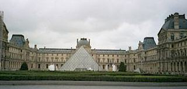
One more shot of the Louvre and the ugly glass pyramid.
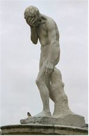
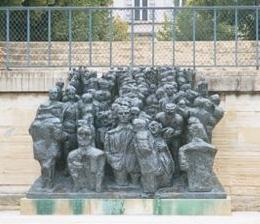
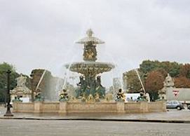

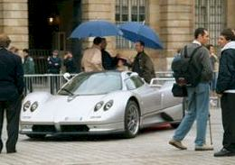
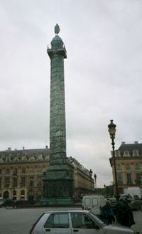
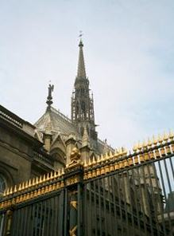
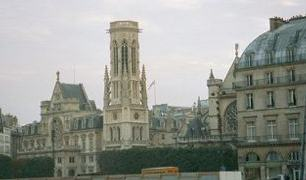

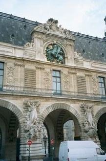
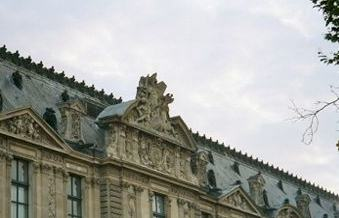
I think both of these shots are of parts of the Louvre. It's a very beautiful building.


The Church of St. Mary Magdalen